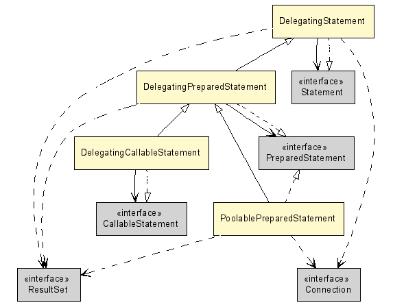

Class Diagram Example: Views for Different Packages
Views are especially interesting in big projects, since they allow to
generate package specific diagrams and overview diagrams in a quick and
consistent way.
As an example we include a few class diagrams that have been generated
from the DBCP connection pool,
without altering the sources and using association and dependency inference
instead.
The base view defines commons options, in particular the use of inference,
common class coloring and class visibility (in particular, we hide the
java runtime classes, with the exclusion of a few java.sql classes).
To avoid visual clutter, we have first shown the java.sql package contents, and
then hid selected classes.
The Overview view provides a full view of the DBCP package,
generating quite a big diagram (click on the diagram to show a full size version).
package org.apache.commons;
/**
* @view
* @opt inferrel
* @opt inferdep
* @opt useimports
*
* @match class .*
* @opt nodefillcolor LightGray
*
* @match class org.apache.commons.*
* @opt nodefillcolor PaleGreen
*
* @match class org.apache.commons.dbcp.*
* @opt nodefillcolor LemonChiffon
*
* @match class java.*|org.xml.*
* @opt hide
*
* @match class java.sql.*
* @opt !hide
*
* @match class java.sql\.(Ref|Time|Timestamp|Array|Date|Time|Clob|Blob|SQLException|.*MetaData.*|SQLWarning)
* @opt hide
*/
public abstract class BaseView {
}
/**
* @view
*/
public class Overview extends BaseView {
}
 The
The CommonsDbcp view concentrates on the content of org.apache.commons.dbcp
package, hiding other packages and subpackages available in the sources
(click on the diagram to show a full size version).
package org.apache.commons;
/**
* @view
*
* @match class org.apache.commons.*
* @opt hide
*
* @match class org.apache.commons.dbcp..*
* @opt !hide
*
* @match class org.apache.commons.dbcp..*\..*
* @opt hide
*/
public class CommonsDbcp extends BaseView {}
 Finally, the
Finally, the Statement view shows only the Statement related
classes and their dependencies.
package org.apache.commons;
/**
* @view
*
* @match class org.apache.commons.*
* @opt hide
*
* @match class org.apache.commons.dbcp\..*Statement.*
* @opt !hide
*
* @match class org.apache.commons.dbcp..*\..*
* @opt hide
*/
public class Statement extends BaseView {
}


 Finally, the
Finally, the  Last change: Tuesday, October 28, 2014 4:26 pm
Last change: Tuesday, October 28, 2014 4:26 pm